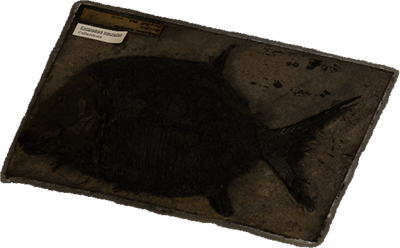
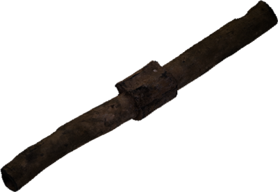
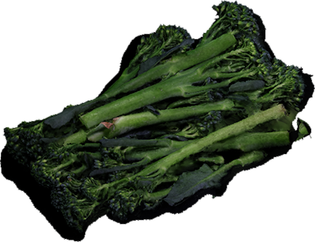

The here and now digital artwork combines artefacts from the Great North Museum: Hancock and elsewhere, with datasets about our environment to tell stories of how we are changing our world and our world is changing us.
The artwork currently features the following artefacts and data sets:
Permian fish fossil and data showing concentrations of CO2 in the air from zero AD to 2018 AD.
The Platysomus lived in the shallow, tropical Zechstein Sea in NE England 250 million years ago during the Permian period. Back then, Newcastle was closer to the equator than it is today, with a humid, swampy climate much like the Florida Everglades.
Concentrations of CO2 in the atmosphere have risen from 277 (mole fraction of CO2) to over 400 between zero AD and 2018. This is the highest level for about 3.5 million years.
Roman lead pipe and global population data.
The section of lead pipe was used to bring water into the Roman town of Corbridge. Around 60 million people lived in the Roman Empire, roughly the population of the UK today. Evidence of the pollution caused by Roman industrial activity, like the metal working which made this pipe, can be detected in ice cores taken from the Arctic.
In 84 AD when Roman Corbridge was built, the world population was roughly 150 million people; in 2018 it is roughly 7.6 billion.
 Auroch skull and data showing global agricultural land-use.
Auroch skull and data showing global agricultural land-use.
The Auroch was a wild ancestor of today’s domestic cattle, which lived in Northumberland 10,000 years ago but is now extinct. Retreating ice sheets left a cold landscape of forests, lakes and rivers, habitat for the great herds of Auroch. As the climate warmed, hunter gatherers moved into the area and the Auroch faced pressure from hunting. As communities became more settled and started farming, they domesticated the Auroch, breeding out the powerful and aggressive traits of the wild animal to create the more docile animal we know as the domestic cow. The Auroch became globally extinct several centuries ago, but could have survived with less pressure from humans.
The amount of land used for agriculture has risen from nothing 10,000 years ago, the era from which this Auroch skull dates, to 285 million hectares in 2016.
Air-freighted Broccoli from Kenya and the amount of food imported by air into the UK from 1996 to 2017.
Rising amounts of ‘out of season’ fruit and vegetables are flown into the UK from outside, to meet the desire of shops and consumers for food when it is out of season in the UK, or which cannot be grown here.
Between 1996 and 2017, the amount of food from outside the EU flown into UK airports rose from 132 thousand tonnes to 2 million tonnes.